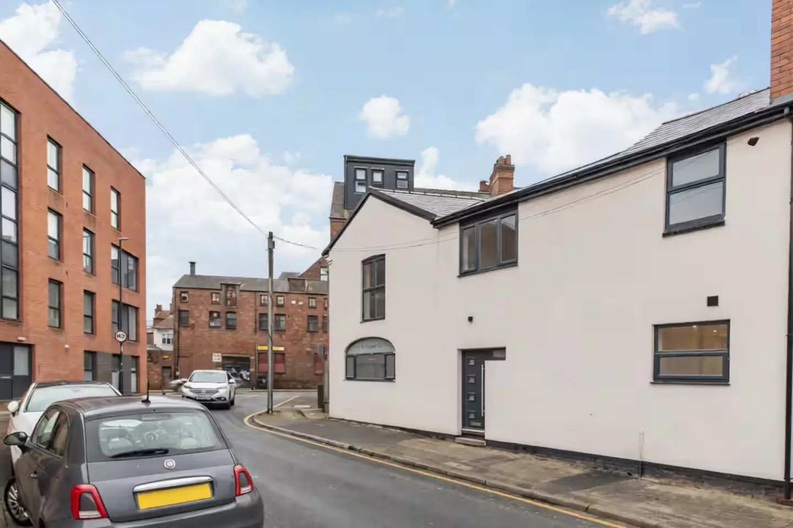

Send it
Give us the postcode, photographs and a short job list.
PROPERTY MAINTENANCE · NOTTINGHAM
Re-Let provides property maintenance in Nottingham for landlords and letting agents. Send us the problem; we coordinate repairs, void property turnarounds and refurbishments and keep the job moving.

One maintenance problem shouldn't become five jobs for you.
ONE POINT OF CONTACT
Contractors, access, sequencing and updates can quickly eat into your day. Re-Let is built around taking ownership of the property job rather than simply supplying a trade.
Give us the postcode, photographs and a short job list.
We clarify the scope, organise access and coordinate the work.
You get a finished job, clear communication and completion evidence.
PROPERTY MAINTENANCE IN NOTTINGHAM
Re-Let supports rental homes across Nottingham with practical maintenance organised around the property, the tenancy and the person making the decisions.
Everyday repair issues, planned maintenance lists and making-good work for occupied and empty rental properties.
Explore landlord repairs →Bring repairs, clearance, cleaning and presentation work into one ordered between-tenancy plan.
Explore void turnarounds →A clearer route for branch teams managing approvals, access, repairs, voids and portfolio maintenance.
Explore letting-agent support →Need a wider improvement package? See our rental property refurbishments in Nottingham, end-of-tenancy and void cleaning, or check the Nottingham areas we cover.
VOID TURNAROUNDS
Give us the keys and the job list. We can coordinate the practical work needed to move a property from end-of-tenancy condition towards ready-to-let.
Explore void turnaroundsREAL WORK
FOR LETTING AGENTS
Give Re-Let the outcome you need and a single route for the job. We can help coordinate recurring property work across managed portfolios.
Property maintenance for letting agentsA BETTER WAY TO BRIEF A JOB
Instead of a vague contact form, Re-Let asks for the details that actually help move property work forward.
PROPERTY NOTES
What to inspect, prioritise and organise before the next tenancy.
A practical way to assess cost, durability and disruption.
Small symptoms that can point to bigger issues.
GOT A PROPERTY THAT NEEDS SORTING?